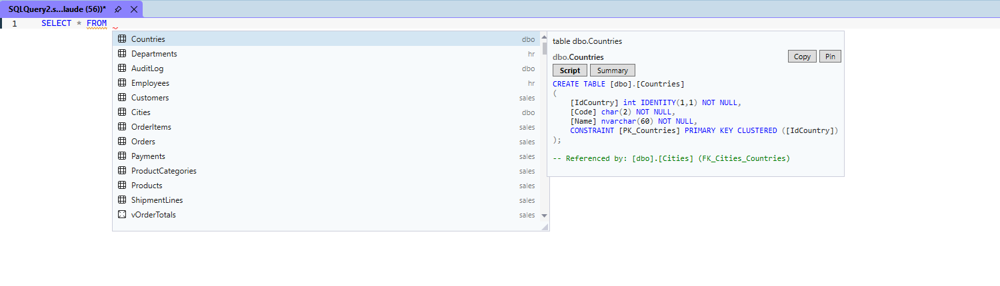
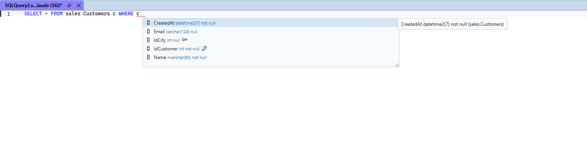
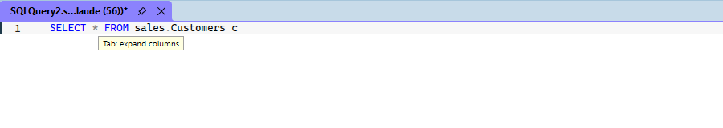
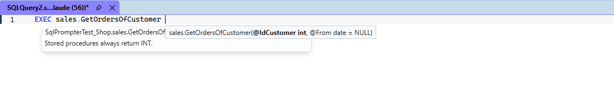

Completion
The suggestion list, its keys, how it filters and what it shows next to the items.

FROM: tables and views with their schema on the right, the script of the selected object in the description area.When the list opens
- While you type a name, a keyword or after a dot.
- After a space that follows
FROM,JOINand the other keywords that expect a table. - After a comma and the space behind it (Show suggestions after a comma), except in
VALUESlists, lists of literals andDECLARE. - On demand with Ctrl+Space (SQL Prompter > Show Suggestions). This list is the one SQL Prompter itself drives.
The list is offered everywhere except inside strings, comments and numbers. In a place where the extension knows the context it offers what fits there; where it does not (for example after EXEC, in VALUES) it offers keywords, functions and data types, and for a new name (an alias after AS, a @variable or #table being declared) it offers nothing.
What the items are
| Item | Notes |
|---|---|
| Schemas, databases | After FROM and similar places; Db. and Db.schema. list the objects of another database, a linked server name lists its databases (more). |
| Tables, views, synonyms | Shown as Name with the schema on the right. A synonym takes its columns from the object it points to. |
| Columns | With the data type and nullability. A key icon marks a primary key, a second one a foreign key. After alias. the columns of that source; elsewhere the columns of all tables in the query, qualified when the name is ambiguous. |
| Functions, procedures | Table-valued and scalar user functions, procedures after EXEC, including the system procedures. |
| Keywords, built-in functions, data types | Inserted in the case set by Keyword case. |
| Snippets | Marked snippet; see Snippets. |
| Join and ON conditions | Whole conditions from foreign keys; see joins. |

c with types; the key icons mark the primary key IdCustomer and the foreign key IdCity.Filtering
The typed text filters the list as you type. Matches are ordered: exact, then prefix, then the rest; inside a group by how often you chose the item (below), then alphabetically.
- Prefix and contains:
custfindsCustomers,mersfinds it too. - Initials and words (Match initials and loose characters):
BKTfindsBurzaKlientTyp,ktfindsBurza_Klient_Typ. - Characters in order:
bzklfinds the same name.
Exact and prefix matches stay first and loose matches come last, so loose matching never pushes a normal match down. Rank by usage puts items you choose more often first inside their group; the counts are per database and local (%APPDATA%\SqlPrompter\usage.json). Reset usage statistics in the settings forgets them.
Keys in the list
| Key | Action |
|---|---|
| Tab, Enter | Insert the selected item. |
| Commit keys: Space, ., ,, ( ), ;, ] | Insert the selected item and are then typed as usual. Each is a setting; by default only Space is on. A dot, comma, parenthesis, semicolon, ] or operator that is not a commit key only closes the list and is typed, so e. keeps e and opens its columns. |
| Up, Down, PgUp, PgDn | Move the selection. |
| Esc | Close the list. |
| Ctrl+Left / Right | Switch to the column picker and back (below). Elsewhere these keys keep their normal meaning. |
Drag the triangle in the bottom-right corner of the list to resize it; the size is kept. The numbers are also in the settings (Rows, Width).
Description area
Next to the list, the selected item is described: the signature of a function or procedure, the type of a column and, for a table, view, function or procedure, its script (the first 28 lines: a table as CREATE TABLE, the others as CREATE OR ALTER) with the buttons Script and Summary. The script is loaded in the background after a short pause and kept for two minutes.
Show descriptions from the database adds the MS_Description extended properties of the object and its columns when there are any.
Column picker
At the start of an item in a select list, GROUP BY or ORDER BY, Ctrl+Left turns the list into a picker: columns grouped by source with check boxes. Space checks a column, Tab or Enter inserts the checked ones (the selected one when none is checked), laid out by the active formatting style. Typing filters. The bar under the list has Select All and List in table order; in GROUP BY there is also an entry that inserts all non-aggregated columns of the select list. Ctrl+Right goes back to all suggestions.
Expanding *

* the hint says Tab: expand columns.Tab right after the * of a select list (or after alias.*) replaces it with the columns, one per line, qualified with the alias (or with the table name when the query has several tables and this table has no alias). Without a result (columns not loaded, * in COUNT(*) or a product) Tab works as usual. SQL Prompter > Refactor > Expand All Select Stars does it for the whole script.
Columns without a FROM
After SELECT without a FROM, typing the start of a column name offers matching columns of all tables and views (the table in the suffix, at most 2000, nothing before the first character). Choosing one inserts it as alias.Column and adds FROM schema.Table AS alias after the select list.
Parameter info

EXEC sales.GetOrdersOfCustomer: the current parameter is in bold.Typing ( or , in a call of a function of the database, or a space after EXEC procedure, shows the signature above the caret line with the current parameter in bold. Ctrl+Shift+Space (Parameter Info) shows it on demand. It follows the caret and closes when the caret leaves the call or on Esc. Functions of the database and procedures are covered; built-in functions are not.
Tooltip over names
Resting the mouse on an alias, table, view, column, variable, function or procedure says what it is: the type, the columns, the parameters, and, when available, the description and a part of the script. It uses the loaded metadata (Show a tooltip over names).
Metadata and when it refreshes
- Metadata, including columns, starts loading when a query window is activated and is kept per database;
USE Saleson a line of its own makes completion follow that database from there on, also acrossGO. - After a script that creates, alters or drops objects (or uses
sp_rename,SELECT ... INTO) runs, the metadata of the database is refreshed within a few seconds. Other changes are noticed at most 30 seconds later. - SQL Prompter > Refresh Metadata reloads at once.
Keyword case
Keyword case sets the case of inserted keywords, built-in functions and data types: follow the casing options of the active formatting style, match what you typed (upper case, or lower case when you started in lower case), always upper or always lower.
Turning it off
Enable suggestions off makes SQL Prompter stay out of the way and the built-in SSMS list is shown. Run the list myself while typing (experimental, off by default) lets SQL Prompter drive the list that opens while you type, the same one as Ctrl+Space, instead of the editor's completion session; turn it on if you want one list behavior everywhere.